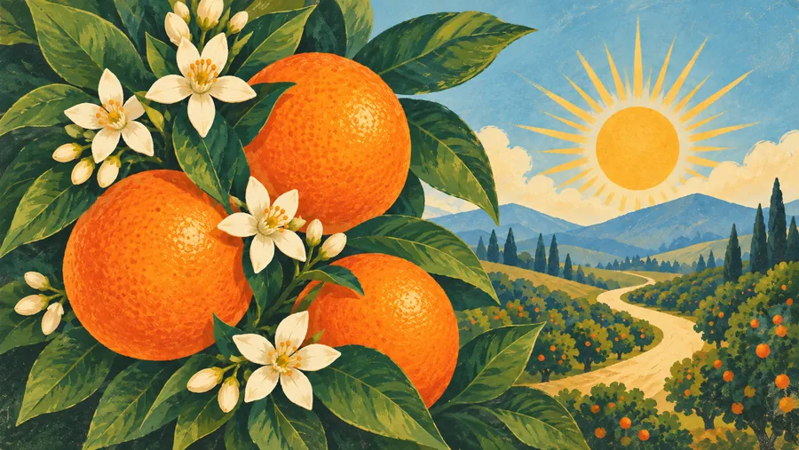

Data Mart Smart
CCC data without the scavenger hunt.
Start with your question, find the right Data Mart report, and understand what the fields are telling you.
Explore Data Mart SmartPractical tools for teaching, OER, data, and the everyday work around the classroom—designed to help you get oriented, find what you need, and move forward.

Start here
Choose the task in front of you. You do not need to know the name of the right project first.
Find the right report, compare colleges, and make sense of CCC data.
See data toolsFind OER and ZTC possibilities without beginning with a blank search box.
See OER toolsUse practical labs and scaffolds that make academic moves more visible to students.
See teaching toolsUse guided prompts and tools to turn complicated first-pass work into a clearer next step.
See guided toolsThe toolkit
Each project solves a different problem. Together, they form a growing collection of tools for the work behind teaching.
CCC data without the scavenger hunt.
Start with your question, find the right Data Mart report, and understand what the fields are telling you.
Explore Data Mart SmartStart with a manageable shortlist.
Course-centered OER possibilities for California Community College English faculty, with human review and attention to fit.
Browse CCC English OER PicksLet AI help with the searching, not the deciding.
Reusable prompts for finding, comparing, evaluating, mapping, and adapting OER and ZTC materials.
Open The OER PromptbookTeach the moves students are often expected to already know.
Interactive activities for reading, writing, research, analysis, rhetorical thinking, and navigating college expectations.
Explore Student Learning LabsThe work behind the work
Searching, decoding, comparing, troubleshooting, translating institutional language, and rebuilding resources all take time. These projects try to make that work smaller and the next move clearer.
About the author
I am Karen Crozer, a California Community College English faculty member who builds independent tools for faculty and students. Most of these projects begin the same way: I am trying to complete a real task, realize the process is harder or more opaque than it needs to be, and start building the resource I wish already existed.
The projects live at the intersection of teaching, open education, accessibility, data, and responsible uses of AI. The through-line is simple: reduce the hidden labor around good teaching without replacing the human judgment that makes the work meaningful.

Unless a specific project says otherwise, these resources are independently created and maintained by Karen Crozer. They are not official California Community Colleges Chancellor's Office or Data Mart products and are not funded, sponsored, or endorsed by those offices. Independent resources can contain errors; please verify consequential information with the appropriate authoritative source.